L6 Crisp-RD2
End-to-end Multiple Linear Regression with 5 feature selection methods, outlier handling, residual diagnostics, and comprehensive visualizations.
0.9474
Best R²
$8,199
Best RMSE
5/5
Methods Compared
2
Optimal Features
Stage 1
Exploring relationships between numeric features and Profit
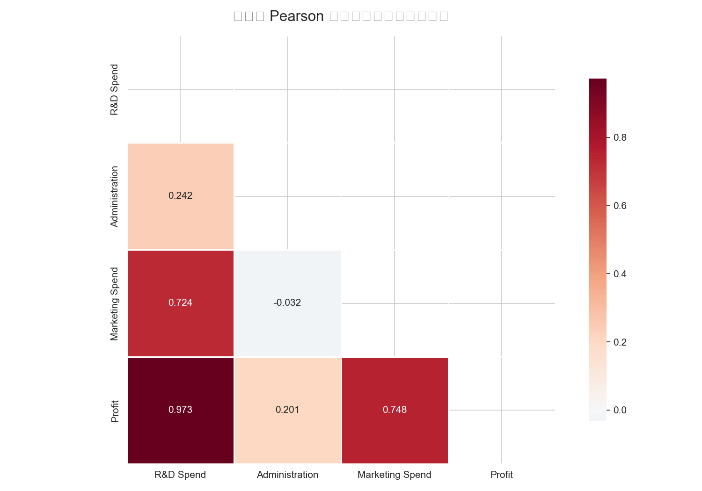
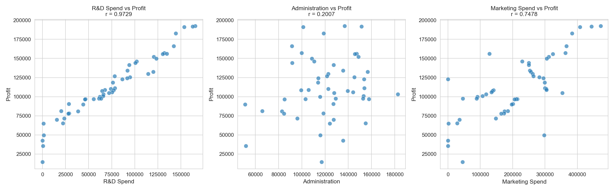
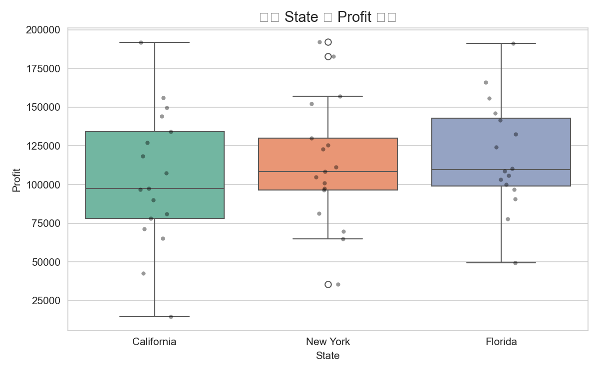
Key Insight
R&D Spend has the strongest correlation with Profit (r = 0.9729), while Administration shows almost no linear relationship (r = 0.2007). This strongly hints that R&D is the dominant driver of profitability.
Stage 2
Comparing five approaches to identify the most important predictors
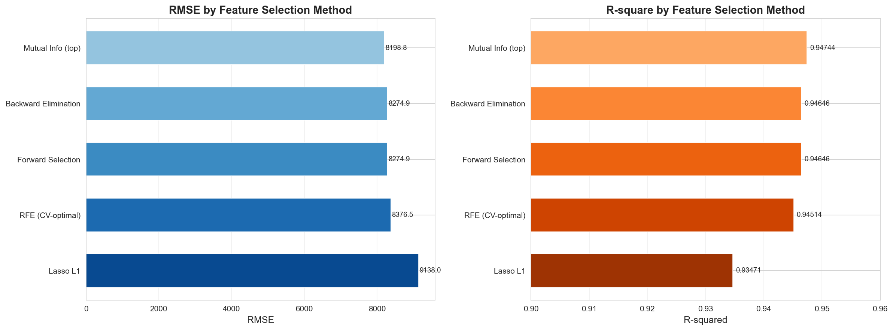
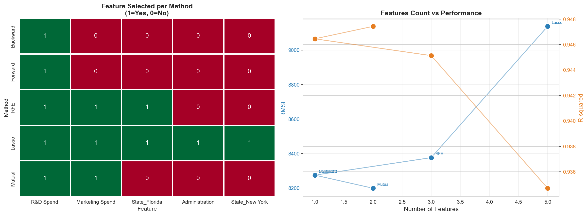
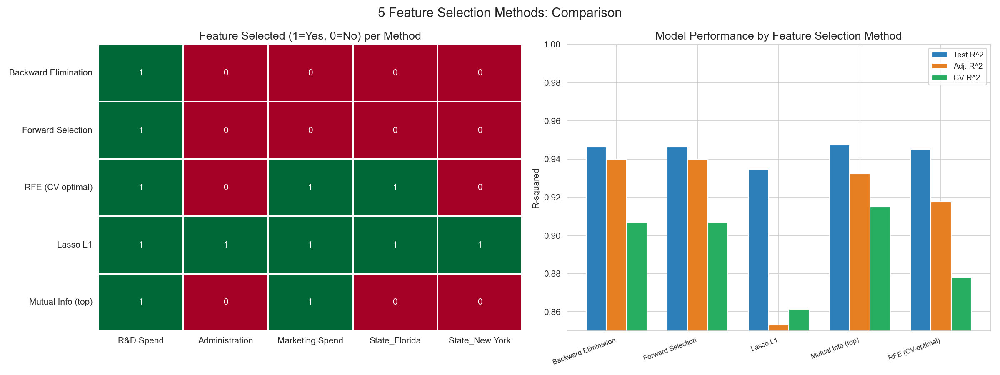
Key Insight
R&D Spend is unanimously selected by 5/5 methods. Marketing Spend is selected by 3/5 methods. State dummies and Administration are consistently rejected as noise.
Stage 3
Tracking RMSE and R² as features are added by importance order
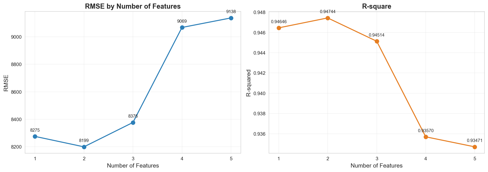
Key Insight
The optimal model uses 2 features [R&D Spend, Marketing Spend]. Adding more features degrades performance — RMSE rises and R² drops, indicating overfitting. The sweet spot delivers R² = 0.9474 and RMSE = $8,199.
Stage 4
Outlier removal, Box-Cox transformation, and Huber Robust Regression
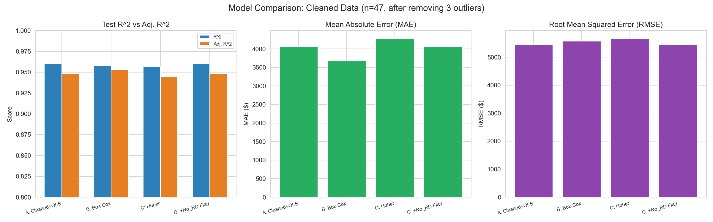
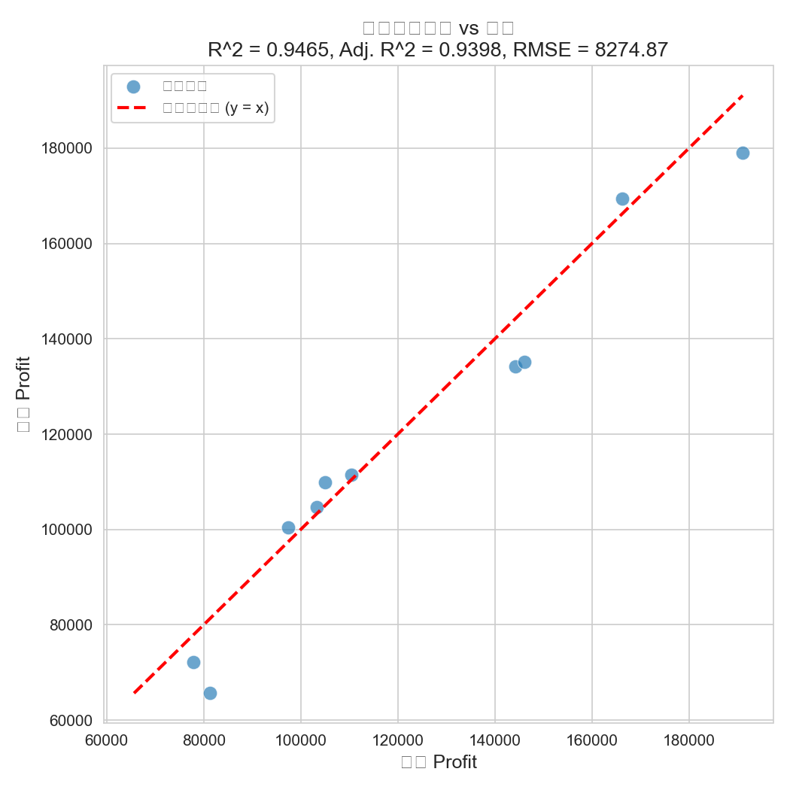
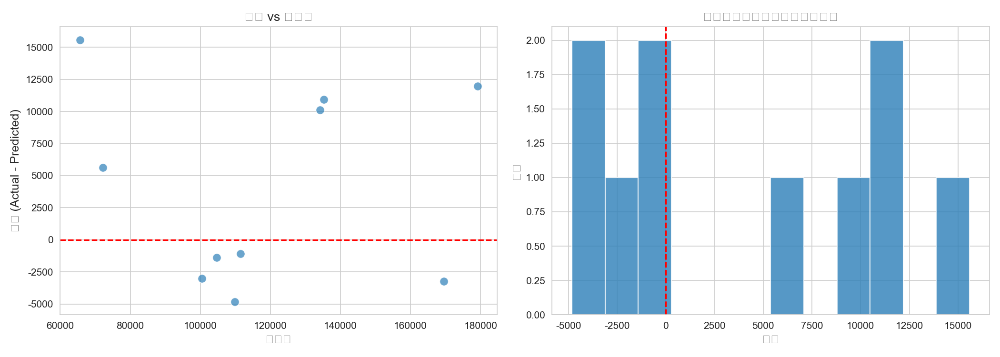
Key Insight
After removing 3 high Cook's Distance outliers, the OLS model satisfies all assumptions: Omnibus p = 0.831 (residuals now normal), DW = 2.07 (no autocorrelation). Marketing Spend becomes statistically significant (P = 0.037).
Overview
All-in-one overview of the 5 method comparison
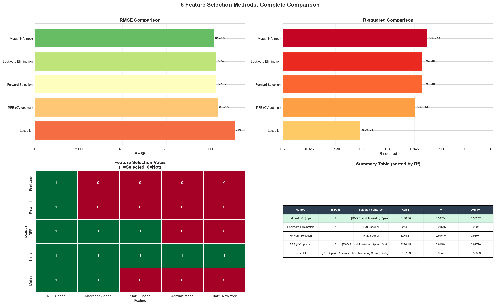
Conclusion
Across 5 feature selection methods and multiple diagnostic tests, R&D Spend emerges as the dominant predictor of Profit. Marketing Spend provides marginal additional value. State location and Administration spending do not statistically influence profitability.